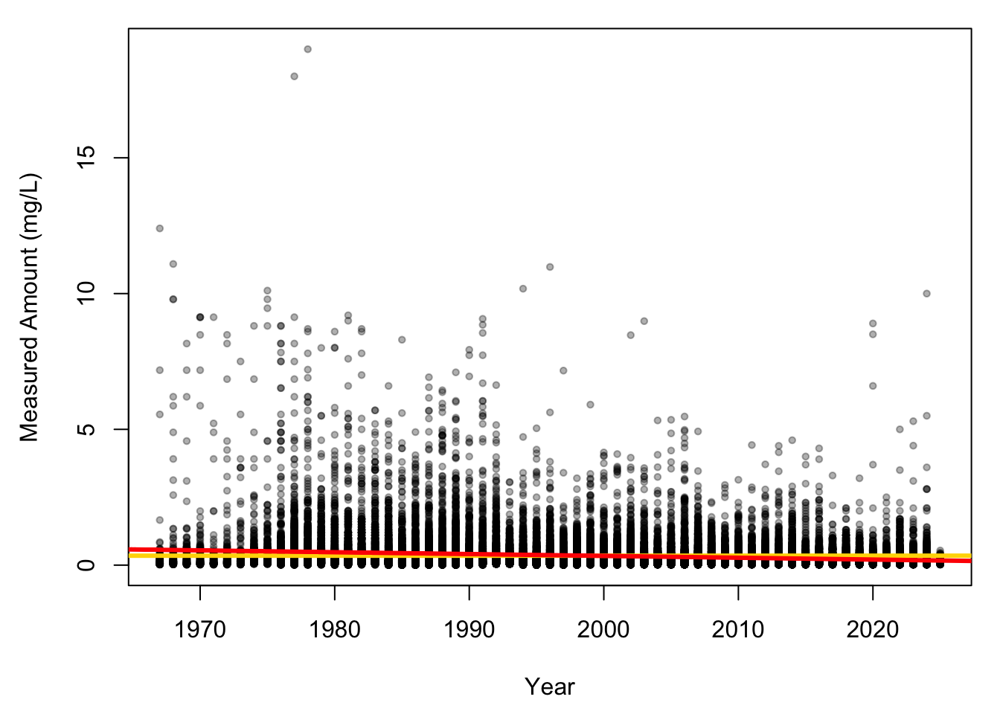
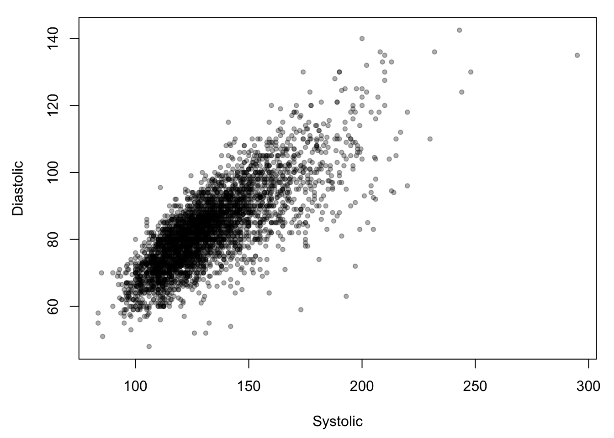

8 Day 8
8.1 Review
- Multivariate Normal Distributions
\[ \boldsymbol{y} = \begin{bmatrix} y_1 \\ y_2 \\ y_3 \end{bmatrix} \sim N\left(\begin{bmatrix} \mu_1 \\ \mu_2 \\ \mu_3 \end{bmatrix}, \begin{bmatrix} \sigma^2 & 0 & 0 \\ 0 & \sigma^2 & 0 \\ 0 & 0 & \sigma^2 \\ \end{bmatrix}\right) \]
\[ \begin{bmatrix} \mu_1 \\ \mu_2 \\ \mu_3 \end{bmatrix} = \boldsymbol{\mu} \]
\[ \begin{bmatrix} \sigma^2 & 0 & 0 \\ 0 & \sigma^2 & 0 \\ 0 & 0 & \sigma^2 \\ \end{bmatrix} = \sigma^2 \begin{bmatrix} 1 & 0 & 0 \\ 0 & 1 & 0 \\ 0 & 0 & 1 \\ \end{bmatrix} = \sigma^2 \textbf{I} \]
\[ \boldsymbol{y} \sim N(\boldsymbol{\mu},\sigma^2 \textbf{I}) \]
“i.i.d.”: independent and identically distributed
Sometimes referred to as a random sample
Assume that all observations of \(y\) arise from the same mean and variance
- Covariance
\[ \text{Cov}(X,Y) = \mathbb{E}\left[(X - \mathbb{E}X)(Y - \mathbb{E}Y) \right] = \mathbb{E}XY - \mathbb{E}X \mathbb{E}Y \]
## [1] 0.0694238\[ \boldsymbol{y} \sim N(\boldsymbol{\mu},\boldsymbol{\Sigma}) \]
\[ \boldsymbol{\Sigma} = \begin{bmatrix} \sigma_{y_{11}} & \sigma_{y_{12}} & ... \sigma_{y_{1p}} \\ \sigma_{y_{21}} & \sigma_{y_{22}} & ... \sigma_{y_{2p}} \\ \vdots & \vdots & \vdots \\ \sigma_{y_{n1}} & \sigma_{y_{n2}} ... & \sigma_{y_{np}} \end{bmatrix} \]
\[ \sigma_{y_{11}} = \sigma^2_{y_1} \]
## [,1] [,2] [,3]
## [1,] 0.03229371 -0.02508852 0.03336786
## [2,] -0.02508852 0.06556879 0.04348240
## [3,] 0.03336786 0.04348240 0.13902055- Joint distributions
\[ y_1,y_2,...,y_n \overset{\text{iid}}{\sim} N(\mu,\sigma^2) \]
- Think of the multiplication rule for independent events
\[ f_{X,Y}(x,y) = N(\mu_{x,y},\sigma^2_{x,y}) \]
- Conditional distributions
\[ f_{Y|X}(y|x) = \frac{f_{X,Y}(x,y)}{f_{Y}(y)} \]
- “Gelman” notation
\[ \left[ y|x \right] = \frac{\left[ x,y \right]}{\left[ y \right]} \]

- Intercept-only
\[ \boldsymbol{y} = \beta_0 + \boldsymbol{\epsilon} \]
# year measure was taken
x = phos$Year
# pollutant measurements
y = phos$UOM
# intercept only model
m1 = lm(y ~ 1)
coef(m1)## (Intercept)
## 0.3470304- What is the structure of \(\boldsymbol{X}\) here?
\[ \boldsymbol{y} = \boldsymbol{X \beta} + \boldsymbol{\epsilon} \]
## [1] 46045## [,1]
## [1,] 46045## [,1]
## [1,] 2.171788e-05## [,1]
## [1,] 15979.02## [1] 15979.02## [,1]
## [1,] 0.3470304## [,1]
## [1,] 0.3470304## [1] 0.3470304- Simple linear model
\[ \boldsymbol{y} = \beta_0 + \beta_1 \boldsymbol{x} + \boldsymbol{\epsilon} \]
\[ \mathbb{E}(\boldsymbol{\epsilon}) = 0 \]
\[ \mathbb{E}(\boldsymbol{\epsilon}) = \boldsymbol{y} - \hat{\boldsymbol{y}} = \boldsymbol{y} - (\beta_0 + \beta_1 \boldsymbol{x}) = 0 \]
\(\mathbb{E}(\boldsymbol{y}) = \boldsymbol{\mu}\)
- \(\hat{\boldsymbol{y}} = \hat{\boldsymbol{\mu}} = \widehat{\mathbb{E}(\boldsymbol{y})}\)
Predicting an expected value of an unknown population parameter
Goal: propose a model that represents the data generating process of \(\boldsymbol{y}\)
Ideal: capture the entire process
Reality: \(\approx 50\%\) most of the time
\[ \boldsymbol{y} = \beta_0 + \beta_1 \boldsymbol{t} + \boldsymbol{\epsilon} \]
##
## Call:
## lm(formula = y ~ x)
##
## Residuals:
## Min 1Q Median 3Q Max
## -0.5494 -0.2506 -0.1425 0.0356 18.5063
##
## Coefficients:
## Estimate Std. Error t value Pr(>|t|)
## (Intercept) 14.0928188 0.4103373 34.34 <2e-16 ***
## x -0.0068752 0.0002052 -33.50 <2e-16 ***
## ---
## Signif. codes: 0 '***' 0.001 '**' 0.01 '*' 0.05 '.' 0.1 ' ' 1
##
## Residual standard error: 0.6084 on 46043 degrees of freedom
## Multiple R-squared: 0.02379, Adjusted R-squared: 0.02377
## F-statistic: 1122 on 1 and 46043 DF, p-value: < 2.2e-16par(mar = c(4.5,4.5,1,1))
plot(x, y,
col = "#00000050",
pch = 20, cex = 0.9,
xlab = "Year",
ylab = "Measured Amount (mg/L)")
abline(h = mean(y),
col = "gold",
lwd = 3)
abline(a = coef(m2)[1], b = coef(m2)[2],
col = "red",
lwd = 3)
Why do we use an intercept only model?
How much better is model 2 versus model 1?
Which are you choosing if you had to?
Any questions?
8.2 Adding complexity
- Multiple linear regression
\[ \boldsymbol{y} = \beta_0 + \beta_1 \boldsymbol{x}_1 + \beta_2 \boldsymbol{x}_2 + ... + \beta_k \boldsymbol{x}_k + \boldsymbol{\epsilon} \]
Problems
What does \(\beta_0\) represent?
\(\beta_1\)?
\(\beta_2\)?
\[ \boldsymbol{y} = \boldsymbol{X \beta} + \boldsymbol{\epsilon} \]
\[ \widehat{\mathbb{E}(\boldsymbol{y})} = \hat{\boldsymbol{\beta}} = (\boldsymbol{X}^\prime \boldsymbol{X})^{-1} \boldsymbol{X}^\prime \boldsymbol{y} \]
Geometry (whiteboard)
How can we conceptualize so many dimensions?
- How do we explain the parameters? Predict?
We cannot simply assume that the coefficients are the sum of all their simple regressions.
8.3 Model development
# framingham heart study (long term cohort study on heart health)
framingham = read.csv("data/framingham_heart_study.csv")
# reduce dimensions and throw out NA values
df = na.omit(framingham[,c(1,2,5,10:15)])
# first 6 rows of each column
head(df) ## male age cigsPerDay totChol sysBP diaBP BMI heartRate glucose
## 1 1 39 0 195 106.0 70 26.97 80 77
## 2 0 46 0 250 121.0 81 28.73 95 76
## 3 1 48 20 245 127.5 80 25.34 75 70
## 4 0 61 30 225 150.0 95 28.58 65 103
## 5 0 46 23 285 130.0 84 23.10 85 85
## 6 0 43 0 228 180.0 110 30.30 77 99## male age cigsPerDay totChol sysBP diaBP BMI heartRate
## 0.07608980 0.13639588 -0.09296323 0.11436650 0.32772352 0.38052898 1.00000000 0.07141530
## glucose
## 0.08882778- Propose a model for BMI (whiteboard)
\[ \boldsymbol{y} = \beta_0 + \beta_1 \boldsymbol{x}_1 + \boldsymbol{\epsilon} \]
- sysBP
\[ \boldsymbol{y} = \beta_0 + \beta_1 \boldsymbol{x}_1 + \beta_2 \boldsymbol{x}_2 + \boldsymbol{\epsilon} \]
- diaBP
\[ \boldsymbol{y} = \beta_0 + \beta_1 \boldsymbol{x}_1 + \beta_2 \boldsymbol{x}_2 + \beta_3 \boldsymbol{x}_3 + \boldsymbol{\epsilon} \]
- age
\[ \boldsymbol{y} = \beta_0 + \beta_1 \boldsymbol{x}_1 + \beta_2 \boldsymbol{x}_2 + \beta_3 \boldsymbol{x}_3 + \beta_4 \boldsymbol{x}_4 + \boldsymbol{\epsilon} \]
- cigsPerDay
m1 = lm(BMI ~ sysBP, data = df)
m2 = lm(BMI ~ sysBP + diaBP, data = df)
m3 = lm(BMI ~ sysBP + diaBP + age, data = df)
m4 = lm(BMI ~ sysBP + diaBP + age + cigsPerDay, data = df)# matrix for tabling coefficient results
cmat = matrix(c(mean(df$BMI), 0, 0, 0, 0,
coef(m1)[1], coef(m1)[2], 0, 0, 0,
coef(m2)[1], coef(m2)[2], coef(m2)[3], 0, 0,
coef(m3)[1], coef(m3)[2], coef(m3)[3], coef(m3)[4], 0,
coef(m4)[1], coef(m4)[2], coef(m4)[3], coef(m4)[4], coef(m4)[5]),
5,5,T)
colnames(cmat) = c("b0", "b1", "b2", "b3", "b4")
rownames(cmat) = c("IO", "M1", "M2", "M3", "M4")
cmat## b0 b1 b2 b3 b4
## IO 25.80483 0.000000000 0.0000000 0.00000000 0.00000000
## M1 17.81498 0.060324144 0.0000000 0.00000000 0.00000000
## M2 14.90431 0.013900737 0.1092114 0.00000000 0.00000000
## M3 14.07433 0.008316134 0.1138074 0.02394858 0.00000000
## M4 14.56847 0.008139557 0.1136106 0.01859131 -0.02095906What’s happening as we add predictors?
- Are certain predictors “better” than others?
par(mfrow = c(1, 2),
mar = c(4.5, 1, 1, 1),
oma = c(0, 4, 0, 0))
plot(df$sysBP, df$BMI,
xlab = "Systolic",
ylab = "",
pch = 20,
col = "#00000050")
plot(df$diaBP, df$BMI,
xlab = "Diastolic",
ylab = "",
yaxt = "n",
pch = 20,
col = "#00000050")
mtext("BMI", side = 2, outer = TRUE, line = 2)
par(mar = c(4.5,4.5,1,1))
plot(df$sysBP,df$diaBP,
xlab = "Systolic",
ylab = "Diastolic",
pch = 20,
col = "#00000050")
8.4 Confidence intervals
Ogallala aquifer
Major concern for KS/TX/NE
Drying up
# historic water level data 1995-2013
wlev = read.csv("data/ext_data/KS_Water_Level_Monitoring_95to13.csv", stringsAsFactors = F)
wlev = wlev[,-1] # remove index column
plot(wlev$day_i,wlev$lev_va_ft,
xlab = "Days since 11-01-94",
ylab = "Water level (ft)",
pch = 20, col = "#00000030")
##
## Call:
## lm(formula = lev_va_ft ~ day_i, data = wlev)
##
## Residuals:
## Min 1Q Median 3Q Max
## -95.15 -62.72 -35.56 53.98 336.07
##
## Coefficients:
## Estimate Std. Error t value Pr(>|t|)
## (Intercept) 97.2558228 0.9746107 99.79 <2e-16 ***
## day_i -0.0037165 0.0002375 -15.65 <2e-16 ***
## ---
## Signif. codes: 0 '***' 0.001 '**' 0.01 '*' 0.05 '.' 0.1 ' ' 1
##
## Residual standard error: 77.54 on 27469 degrees of freedom
## Multiple R-squared: 0.008838, Adjusted R-squared: 0.008802
## F-statistic: 244.9 on 1 and 27469 DF, p-value: < 2.2e-16- There’s usually three ways to work with a problem in R
- Throw math at it
# degrees of freedom
dfr = nrow(wlev) - 2
# t value
t_v = qt(0.975,dfr)
# standard error of beta 1
stde_b1 = diag(vcov(m1))[2]^0.5
coef(m1)[2] - t_v*stde_b1 # lower## day_i
## -0.004181951## day_i
## -0.003251031- Throw definitions / structures at it
## day_i
## 0.0002374733## day_i
## 0.0002374733## [1] 1.96005## day_i
## -0.004181939## day_i
## -0.003251043- Throw functions / packages at it
## 2.5 % 97.5 %
## -0.004181951 -0.003251031Interpreting confidence intervals
Misconceptions
How to lie with statistics
set.seed(73)
# predictions with confidence bands
pred = predict(m1, type = "response", interval = "confidence")
# plot including conf bands
or = order(wlev$day_i)
plot(wlev$day_i,wlev$lev_va_ft,
xlab = "Days since 11-01-94",
ylab = "Water level (ft)",
pch = 20, col = "#D1D1D170")
polygon(c(wlev$day_i[or], rev(wlev$day_i[or])),
c(pred[,2][or], rev(pred[,3][or])),
col = "#51288570",
border = NA)
lines(wlev$day_i[or], pred[,1][or], lwd = 2, col = "#512885")
plot(wlev$day_i,wlev$lev_va_ft,
xlab = "Days since 11-01-94",
ylab = "Water level (ft)",
pch = 20, col = "#D1D1D170",
ylim = c(70,100))
polygon(c(wlev$day_i[or], rev(wlev$day_i[or])),
c(pred[,2][or], rev(pred[,3][or])),
col = "#51288570",
border = NA)
lines(wlev$day_i[or], pred[,1][or], lwd = 2, col = "#512885")
8.5 Derived quantities
When will the Ogallala aquifer dry up?
Probably a question we should ask
Not an answer that’s nice to think about
# solution for x intercept
dry_day = as.numeric(-coef(m1)[1]/coef(m1)[2])
dry_day # the day the aquifer will dry up## [1] 26168.72## [1] 71.69513## [1] 2066.6128.6 R programming Lab
- Read these two pages from [Wood (2006)
# install.packages("gamair")
library(gamair)
data(hubble)
par(mar = c(4.5,4.5,2,1))
plot(hubble$x,hubble$y,
xlab = "Distance in Mega parsecs",
ylab = "Velocity (km/s)",
pch = 19)
m = lm(hubble$y ~ hubble$x - 1)
abline(m)
Using the hubble data in the gamair package:
Write out a linear model for predicting the velocity of the Cepheid stars observed by the Hubble space telescope based on their distance in mega parsecs, based on Hubble’s law.
State and briefly explain what the assumptions behind that model are.
Fit the data in R using the matrix form of method of least squares. Save the results to a variable in R.
\[ \boldsymbol{\beta} = (\boldsymbol{X}^\prime \boldsymbol{X})^{-1} \boldsymbol{X}^\prime y \]
Fit the data in R using the
lm()function. Save the model.Compare the coefficients from (3) and (4). Are they different?
Add the fitted regression line from (4) to the plot of the original data. Set the line width to 2 and change the color to be different from the points.
Compute the confidence interval for the coefficients in (4) using any method you prefer. Save them.
Based off of the reading, predict the age of the universe. Note that the distance is measured in Mega parsecs, which are \(3.09 \times 10^19\) km.